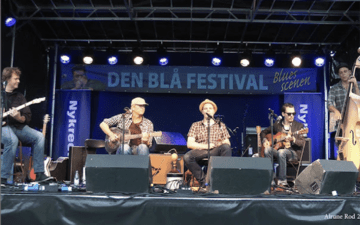
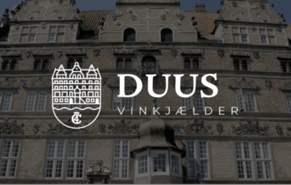
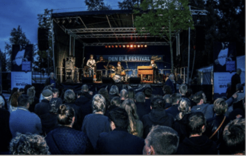
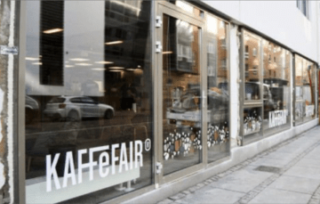
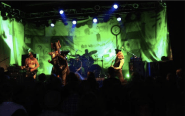

Læs mere om de forskellige spillesteder her

Bluesscenen Toldbod Plads
Kom og deltag i vores udendørs blues! Den Blå Festivals bluesscene
oplever hvert år et brag af en bluefest, hvor vores gæster møder
talstærkt op, og har det godt.

Duus vinkælder
Du kan mærke det i samme øjeblik, du træder ind ad døren.
Historiens vingesus blander sig med duften af nylavet mad,
summende stemmer og glas, der mødes i en skål. Alt sammen i smukke
historiske rammer i det gamle stenhus – lige midt i Aalborg.

Jazzscenen
Den blå festivals store omdrejningspunkt er jazzscenen, hvor vi
oplever en kæmpe opbakning fra vores gæster der møder op i store
mængder hvert år. Du oplever jazzscenen udendørs, hvor dygtige
jazz-kunstnere sørger for at sætte gang i festen.

KaffeFair
KaffeFair åbnede d. 23. juni 2006 i beskedne lokaler i Maren Turis
Gade i Aalborg. Allerede den 15. august 2008 flyttede vi til
større lokaler i Nørregade. Flere afdelinger kom til i årene
derefter. I 2018 åbnede KaffeFair på Strandvejen. Mange spørger,
hvor navnet kommer fra. Det er opfundet af en gruppe unge, som var
med til at udvikle konceptet, inden vi åbnede. Idéen var at lave
en kaffebar i Aalborg med fokus på Fair Trade. Deraf navnet.

Stargate Scenen
Er du en jazznørd? Kom og oplev klassiske og upcoming
jazzkunstnere på Stargatescenen